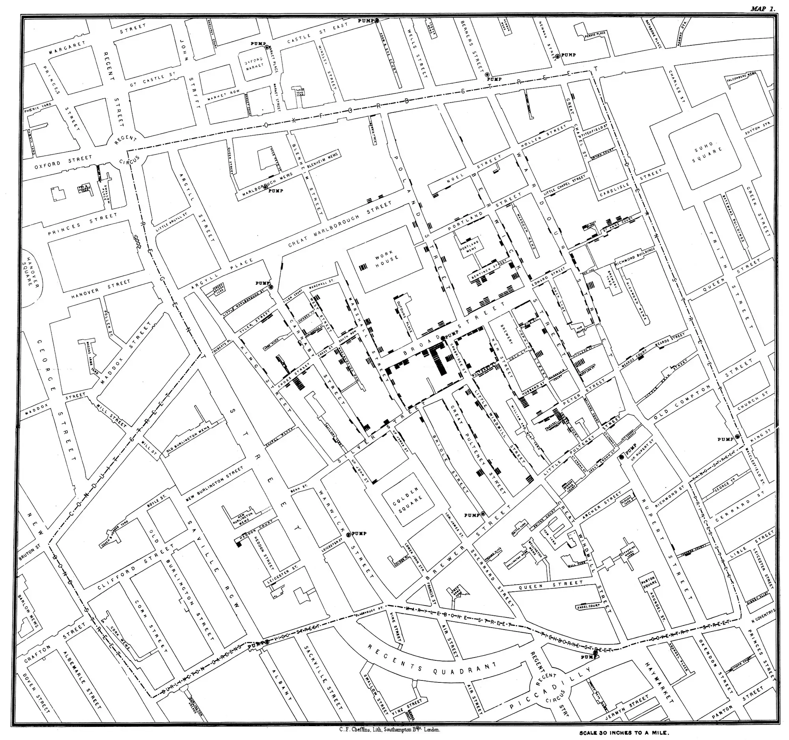
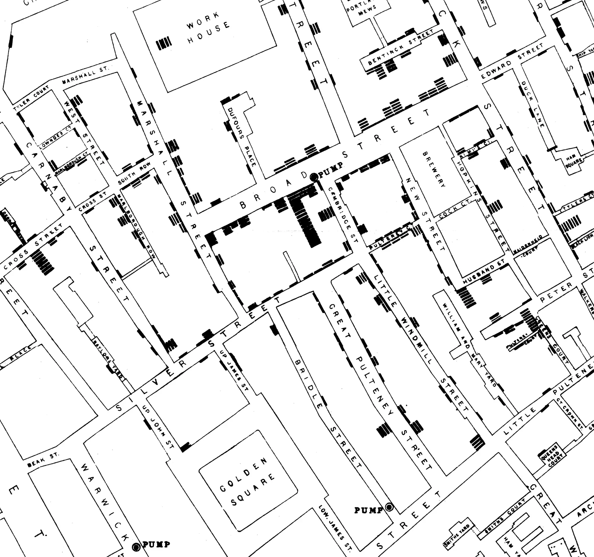
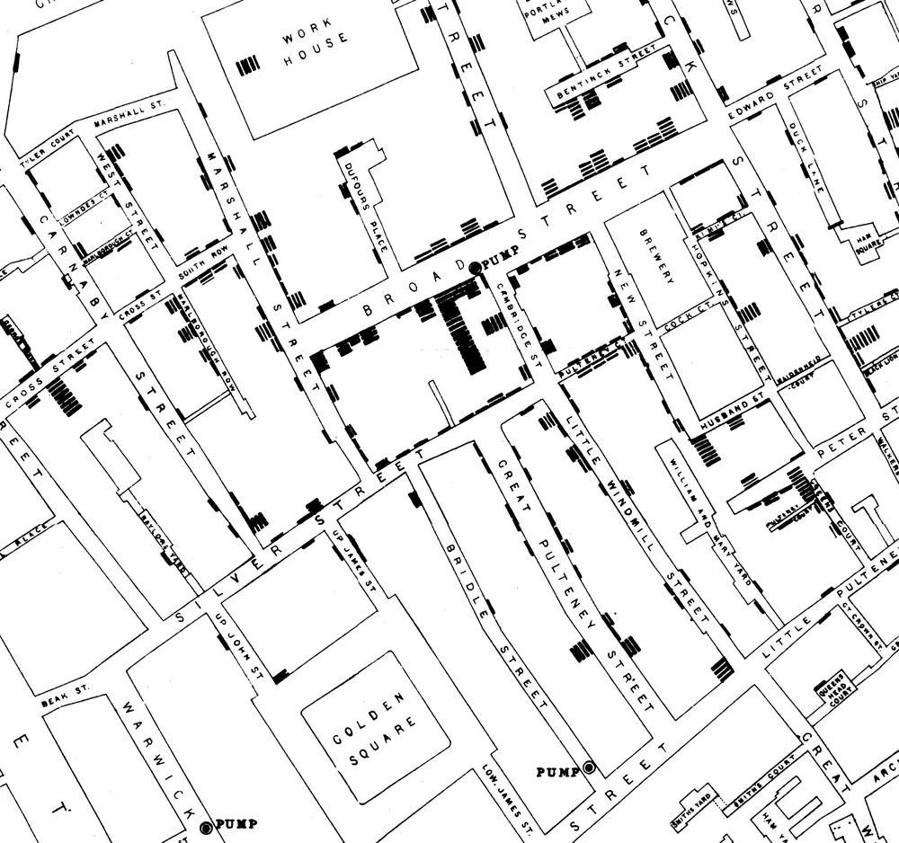

What causes cancer and other chronic diseases, and how sure the evidence is
Abstract
Free tools built from the IARC Monographs and published reviews.
They describe whole populations, not what caused any one person’s illness.



Detail around the Broad Street pump.
1Same certainty, very different size
Tobacco smoking and processed meat are both in Group 1: the evidence that each can cause cancer is equally sure. The risks are not.
About 10 to 12 in 100 smokers get lung cancer by age 75; about 4 to 5 in 1,000 lifelong non-smokers do (Fig. 2). Each 50 grams of processed meat eaten every day raises the risk of bowel cancer by 18%.
2How sure: the four groups
The label says how sure the evidence is that something can cause cancer in people. It does not say how large the risk is.
- 1
- Known causeThe agent can cause cancer in people. This is the group in which IARC is most certain. It does not say how large the risk is.
- 2A
- Probable causeThe agent probably causes cancer in people.
- 2B
- Possible causeThe agent may cause cancer in people. Aspartame is in this group.
- 3
- Not classifiableThe evidence does not meet the rules for any other group. It does not mean safe.
3The two explorers
Free, and in 10 languages

Cancer Evidence Explorer
Which exposures can cause which cancers, and how sure the evidence is for each link. From the IARC Monographs.

Chronic Disease Evidence Explorer
Risk factors for heart disease, stroke, type 2 diabetes, dementia and more, graded by how strong the evidence is.
Table 1. What each explorer holds.
| Explorer | Causes | Outcomes | Links | Languages |
|---|---|---|---|---|
| Cancer Evidence Explorer | 185exposures | 68cancer types | 469links | 10languages |
| Chronic Disease Evidence Explorer | 124risk factors | 45diseases | 356graded links | 10languages |
Box 1 · What you can do
Code Against Cancer
The official recommendations for lowering your own cancer risk, coordinated by IARC (WHO) and its partners. Fourteen actions for Europe, seventeen for Latin America and the Caribbean.
Read the recommendations4For schools and families
Learning by playing: three games.


References
- IARC Monographs.
- Published reviews, as named in each entry.
- Cancer Evidence Explorer. EpiDetective. European data.
- Code Against Cancer. Coordinated by IARC (WHO) and its partners.
- Snow J. Map of cholera deaths around the Broad Street pump, Soho. 1854.